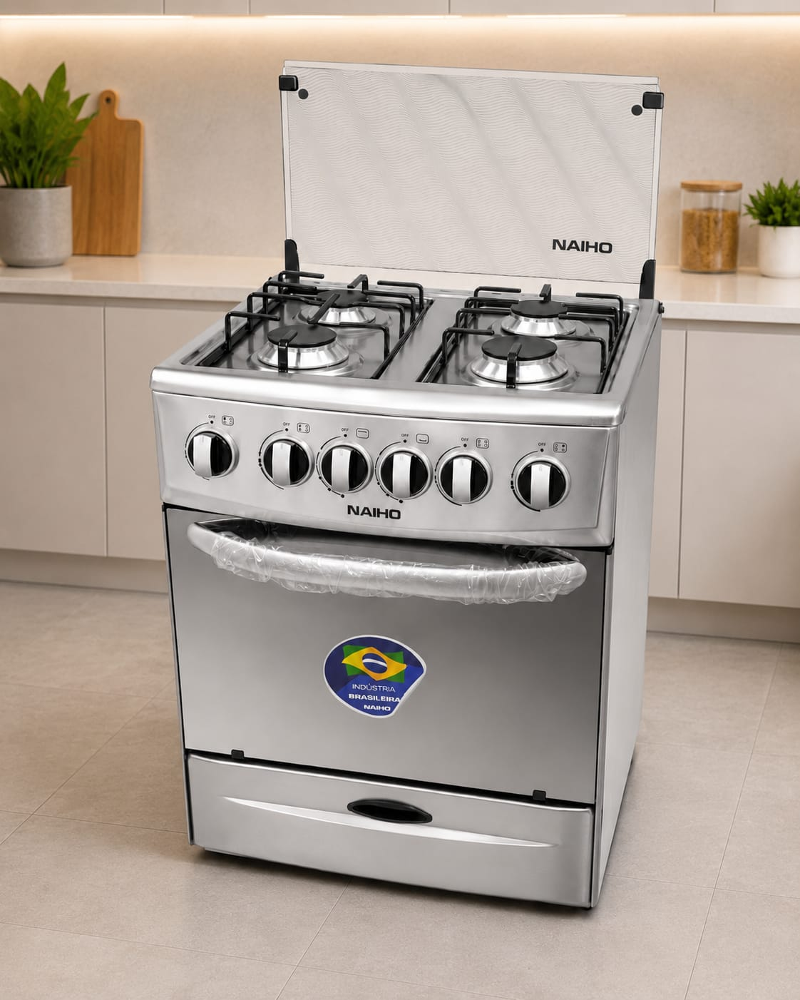
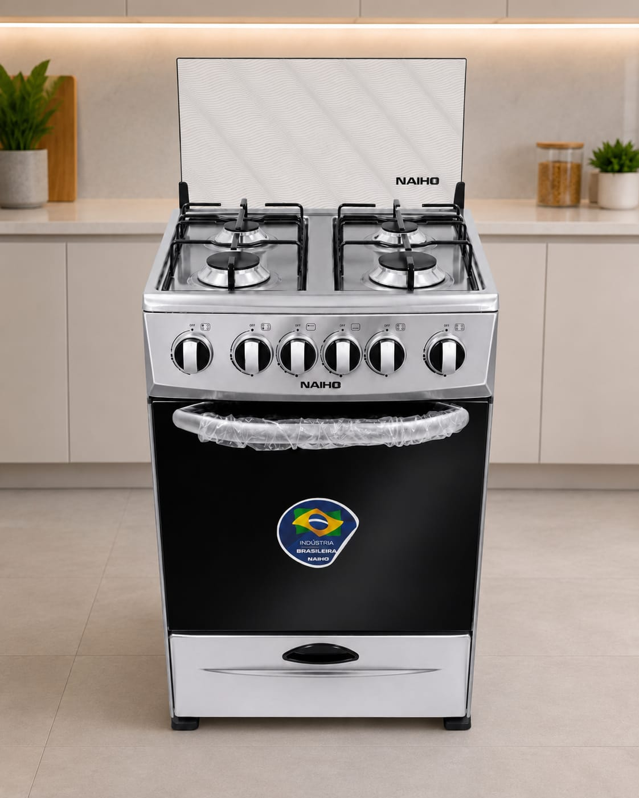
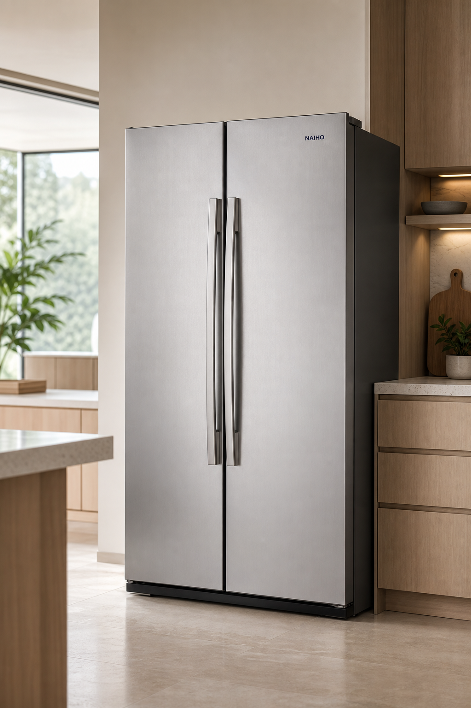
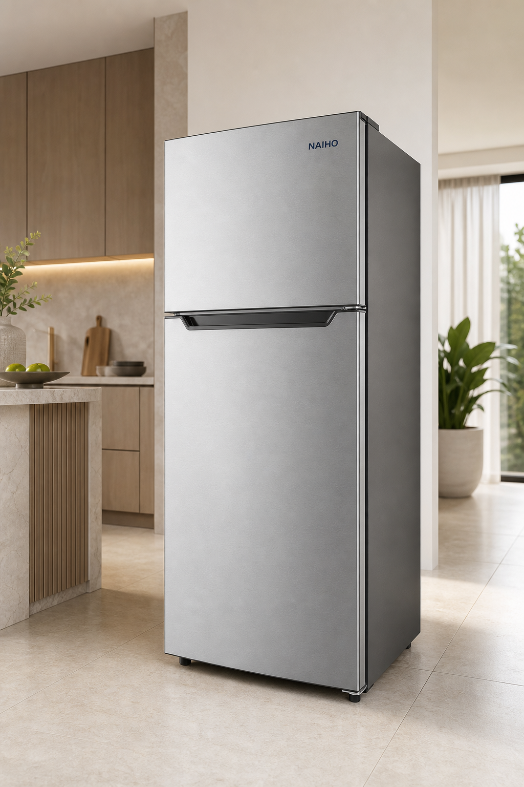
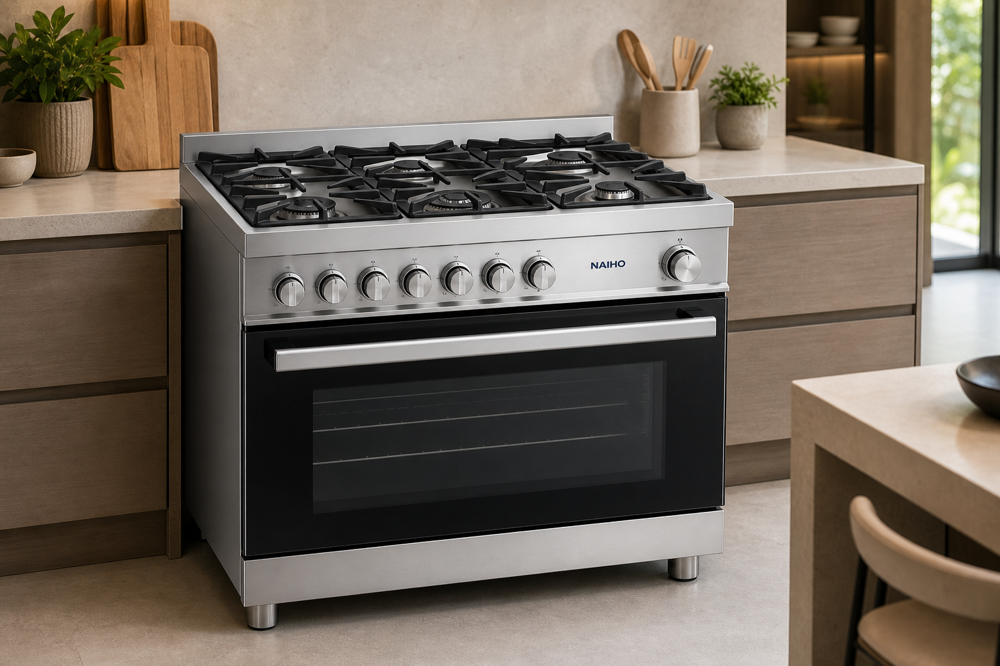
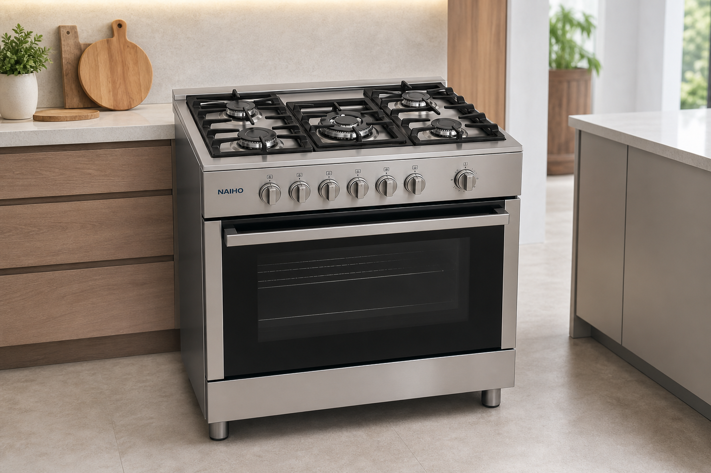
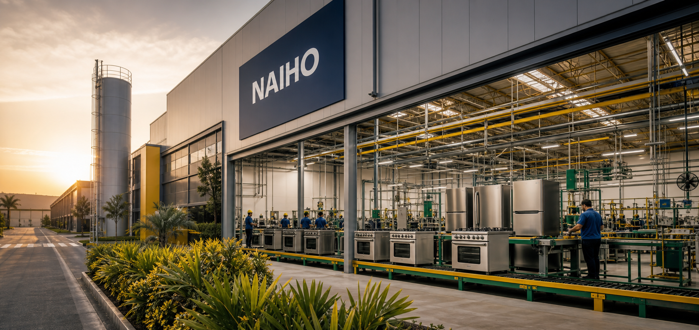

Diseño resistenteMateriales pensados para durar
★ Industria brasileña
El corazón de tu cocina, hecho para durar.
Cocinas NAIHO con horno amplio y cocción uniforme: el aliado ideal para tus recetas, tu repostería y cada momento en familia.
4, 5 y 6hornallas
Horno amplioideal para repostería
Garantíaen Latinoamérica
Producto destacado

✓
Calidad certificadaFabricación brasileña
Cocción uniformeResultados deliciosos siempre
Frío eficienteConservación que protege
Respaldo regionalBrasil, Bolivia y Latinoamérica
CONOCE NUESTRA LÍNEA
Diseñados para tu día a día
Soluciones confiables que combinan capacidad, eficiencia y un estilo que transforma tu hogar.
DESTACADA

COCINAS
Cocina NAIHO 4 hornallas
Compacta, potente y con horno amplio para repostería.
Horno amplioAcero
Ver características →NUEVO

REFRIGERACIÓN
Refrigerador Doble Puerta
Más espacio, orden y frescura para toda la familia.
No FrostGran capacidad
Ver características →
REFRIGERACIÓN
Refrigerador Clásico
Eficiencia y conservación confiable en un diseño versátil.
EficienteSilencioso
Ver características →
COCINAS
Cocina NAIHO 6 hornallas
Máxima capacidad para quienes cocinan a lo grande.
6 hornallasExtra amplia
Ver características →
COCINAS
Cocina NAIHO 5 hornallas
Potencia versátil y control preciso para cada preparación.
5 hornallasMultifunción
Ver características →COCINAS
Cocina NAIHO 4 hornallas
El tamaño perfecto con un horno que sorprende por su capacidad.
4 hornallasFácil limpieza
Ver características →Hecho en
Brasil
Brasil
CALIDAD QUE SE SIENTEIngeniería brasileña,
01 02 03
Ingeniería brasileña,
confianza latinoamericana.
En NAIHO sabemos que un electrodoméstico es parte de tu familia. Por eso combinamos fabricación robusta, diseño funcional y un respaldo pensado para acompañarte.
Hornos para resultados extraordinarios
Temperatura estable y espacio generoso, ideal para panes, tortas y repostería.
Resistencia para el uso diario
Construcción sólida y superficies prácticas para una limpieza sencilla.
Garantía con alcance regional
Respaldo en Brasil, Bolivia y países de Latinoamérica.

UNA HISTORIA QUE CONTINÚA
SEDE EN BRASIL
Más de 50 años creando confianza.
Una trayectoria vinculada a la tradición industrial brasileña, construida alrededor de electrodomésticos resistentes, funcionales y pensados para acompañar a las familias durante muchos años.
+50años de trayectoria
Brasilorigen y fabricación
Latinoaméricapresencia y respaldo
All Brás — São Paulo
R. Rodrigues dos Santos, 91
Brás, São Paulo — Brasil
SERVICIOS TÉCNICOS AUTORIZADOS
Soporte en Bolivia
Contactos originales organizados por ciudad para encontrar atención técnica autorizada rápidamente.
Selecciona un número desde tu celular para iniciar la llamada. La disponibilidad de atención puede variar según la ciudad.
TU HOGAR MERECE MÁS
Hablar con un asesor →Encuentra tu NAIHO ideal.
Consulta modelos, disponibilidad y distribuidores autorizados en tu país.